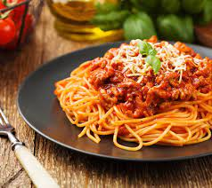

Spag bol aka Spaghetti Bolognese

Description
Create an Australian household staple, juicy mince covered in spaghetti pasta and Bolognese Sauce
Ingredients
- 1 lb (450g) ground beef
- 2 cloves garlic, minced
- 1 onion, finely chopped
- 8 oz (225g) spaghetti
- 1 can (14 oz) crushed tomatoes
Steps
- In a skillet, brown the ground beef over medium heat, breaking it into crumbles.
- Add chopped onions and minced garlic, cooking until onions are translucent.
- Pour in the crushed tomatoes, stirring well. Simmer for 15-20 minutes.
- Meanwhile, cook the spaghetti according to package instructions.
- Serve the bolognese sauce over the cooked spaghetti. Optionally, garnish with grated Parmesan cheese and fresh basil. Enjoy your quick and delicious spaghetti bolognese!